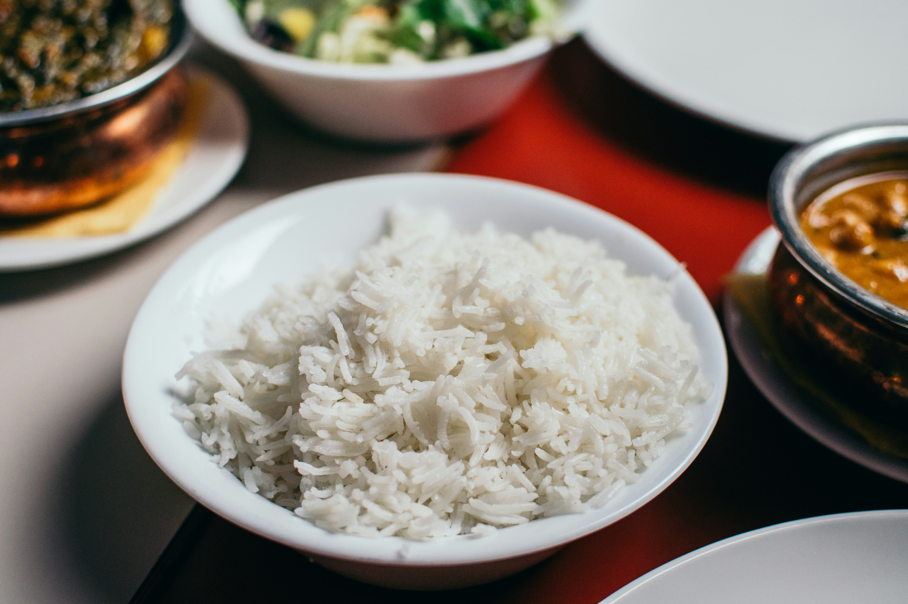

Home
Rice

Description
Rice is a popular staple food made from rice grains cooked in water. It is commonly served with vegetables, meat, fish or beans.
Ingredients
- 2 cups of rice
- 4 cups of water
- 1 teaspoon of salt
- 1 tablespoon of cooking oil (optional)
Steps
- Measure 2 cups of rice and remove any unwanted particles.
- Wash the rice thoroughly with clean water.
- Put 4 cups of water in a cooking pot.
- Add salt and cooking oil to the water.
- Bring the water to a boil.
- Add the washed rice to the boiling water and stir gently.
- Cover the pot and reduce the heat to low.
- Allow the rice to cook for approximately 15–20 minutes until the water is absorbed and the rice is soft.
- Remove the pot from the heat and leave it covered for about 5 minutes.
- Fluff the rice gently with a fork and serve while hot.